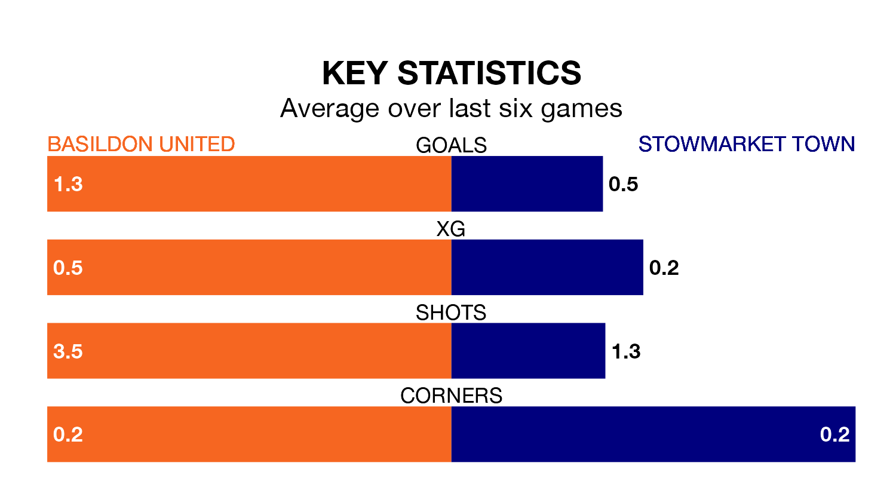

Stowmarket Town come to play Basildon United on late Tuesday in terrible form, having collected just one point from their last six games.
The visitors have drawn just one of their last six fixtures, while Basildon have three wins and a draw.
Stowmarket are bottom of the table after 18 games, of which they have won none and drawn three, earning three points.
Basildon are 13 places ahead of Town in seventh, with 10 wins and three draws putting them on 33 points.
With 14 goals in 18 games so far this season, the away team are the league's second-lowest scorers with 0.8 goals per game. And they are conceding more than average, letting in 57 goals at a rate of 3.2 per game.
United, meanwhile, are above average scorers, with 2.1 goals per game, compared to a league average of 1.7. They have conceded 1.6 goals per game.
Over the last two years, Basildon and Stowmarket have played each other on three occasions. They won one each, and they drew once.
Their last meeting was on February 25, when Basildon won 1-0 away.
Basildon's last match was on December 30, a 2-1 win against Brightlingsea Regent.
Stowmarket drew 1-1 with Gorleston last time out, on Saturday.
Updated: 15:34, 08/01/24